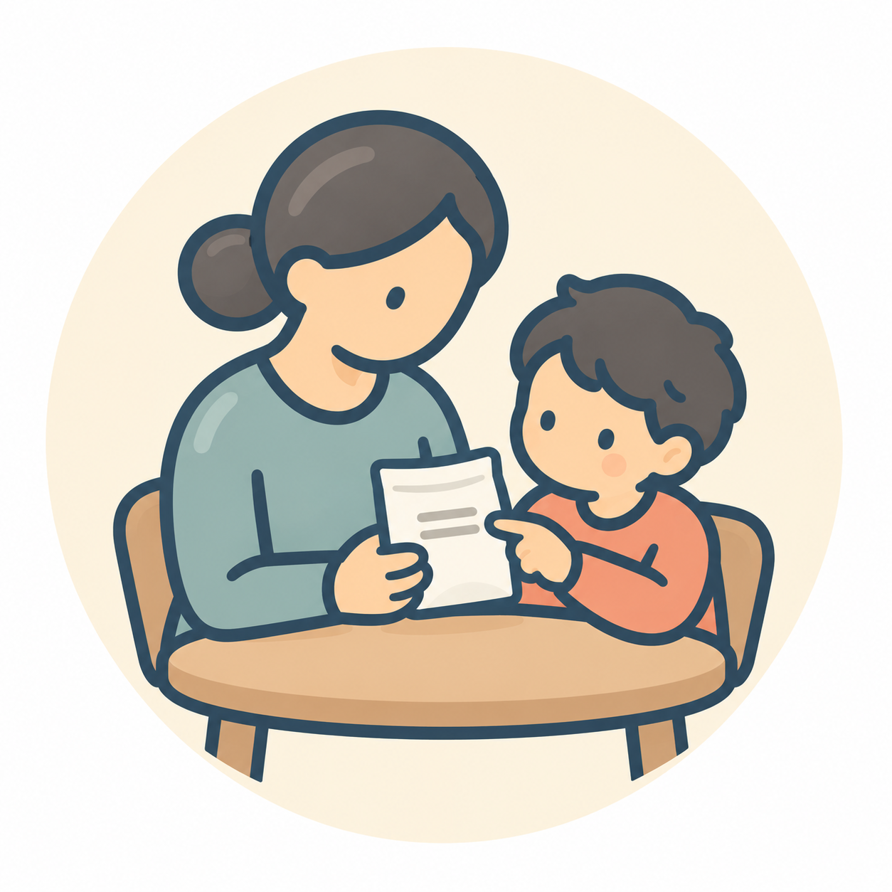

冊子「こどものおくすりガイド」とあわせて読める年齢別ガイドです。
こどものくすり ｜ 冊子 P07 ｜ おおむね6歳以上
学童期以降の薬の飲み方
薬のことを知って、自分でできることを少しずつ増やしましょう。
年齢は目安です。お子さんの様子に合わせてご覧ください。
薬を飲む理由を知りましょう
薬は何のために使うのか、いつ使うのかを、子ども自身にもわかる言葉で説明しましょう。わからないことは、医師・薬剤師に質問してかまいません。
飲む習慣を一緒につくりましょう
カレンダーやチェック表などを使い、飲んだことを確認する工夫をしましょう。学校生活や習い事などに合わせた服薬方法も、必要に応じて相談しましょう。
自分でできることを増やしましょう
水を準備する、薬袋を確認するなど、できることから少しずつ練習しましょう。錠剤を飲めるようになる時期には個人差があります。無理に練習させず、薬の形や飲み方について相談しましょう。

詳しい飲ませ方・困ったときは
冊子「こどものおくすりガイド」ver.2.0のP07と内容を照合しました。原稿照合日：2026年10月27日。
関連する詳しい記事に出典と相談の目安を掲載しています。薬ごとの指示は、医師・薬剤師に確認してください。